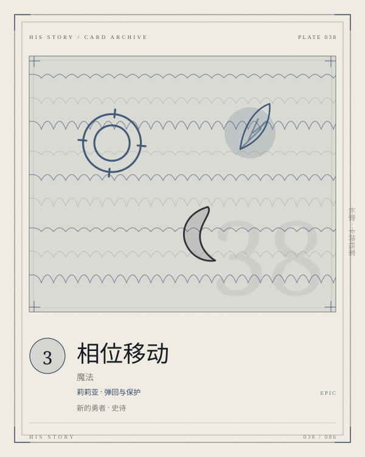

PLATE 038 / 086PHASE-SHIFT
卡面为程序生成的概念图版；卡文与规则以本页正文为准。
CARD / LILIA / 魔法
相位移动
莉莉亚 · 弹回与保护
新的勇者史诗魔法COST 3返回抽牌
将一个单位返回其所有者手牌。若为己方单位，抽一张牌。莉莉亚觉醒后，转换为「逐月」。
- COST
- 3
- C / A / D
- —
- GROUP
- 莉莉亚魔法
- LIMIT
- 2构筑上限
归属 莉莉亚 · 新的勇者 · 史诗。上限字段为「2」；原典未列上限的卡，页面不替它补。
关联 LINKS · 出边 + 入边 · 同目标去重
关联不是规则联动。它记录这张卡在设计与叙事上依赖谁、被谁依赖；跨阵营的边只标「对照」。
转换
逐月
莉莉亚觉醒后，相位移动转换为逐月
配套
苍白之月
保护莉莉亚，等她攒够蓄能
配套
通向月面的经络
把单位收回手牌，再用经络把它送回去
词条 KEYWORDS IN TEXT
觉醒获得觉醒面板，同时中止原有蓄能。
转换卡变为另一张；张数不变。
ARCHIVIST'S NOTE
肥鱼碎碎念
三费，将一个单位返回其所有者手牌；若为己方单位，抽一张；莉莉亚觉醒后转换为逐月。它是莉莉亚的「弹回」。
返回手牌不是消灭，但它能拆掉对手的蓄能、防御和站位。对己方使用则是保护：把一个要被解掉的单位收回来，还能抽一张。
注意它抽牌的条件是「己方单位」——弹回敌人不抽，弹回自己才抽。这决定了它的主要用法是保护，而不是解场。
—— 归档者，读这张卡的时候